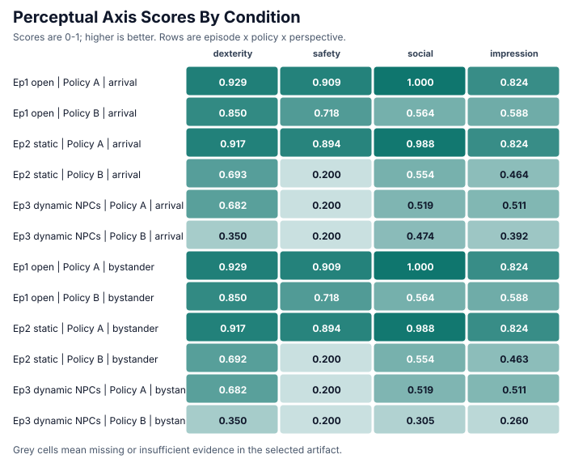
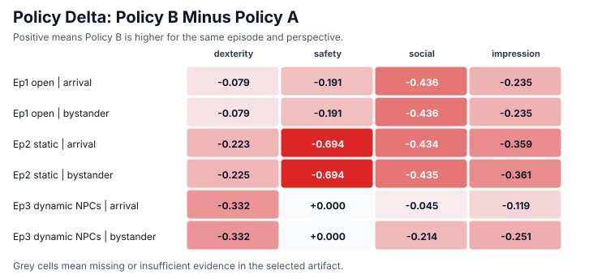
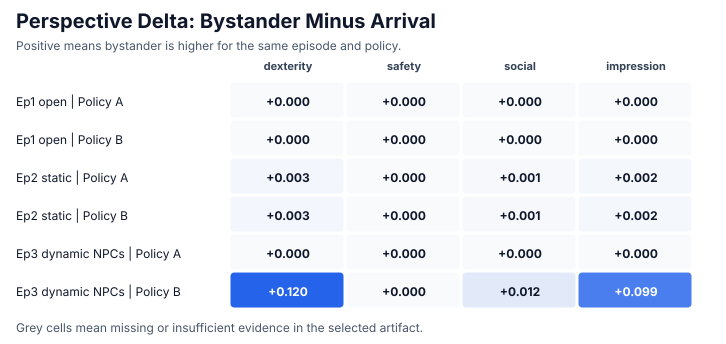
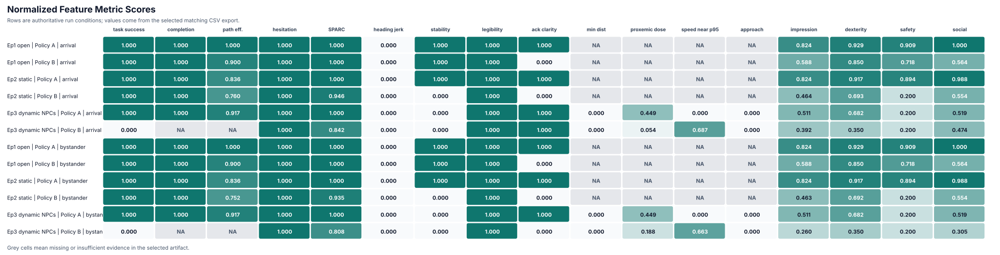

Local Validation Metric Comparisons
Axis scores come from each run's authoritative report.json.
Low-level feature metric scores come from the latest CSV row that matches the
manifest episode for that folder. Because these are deterministic validation
artifacts rather than independent participant samples, the comparison uses
paired within-episode deltas instead of p-values.
Data exports:
condition_summary.csv
axis_scores.csv
metric_scores.csv
policy_deltas.csv
perspective_deltas.csv
Axis Score Overview

Policy Comparison
Positive cells mean Policy B scored higher than Policy A for the same episode and perspective.

Largest policy deltas
| episode | perspective | axis | policy_a | policy_b | delta_policy_b_minus_a |
|---|---|---|---|---|---|
| Ep2 static | arrival | perceived_safety | 0.894 | 0.200 | -0.694 |
| Ep2 static | bystander | perceived_safety | 0.894 | 0.200 | -0.694 |
| Ep1 open | bystander | perceived_social_awareness | 1.000 | 0.564 | -0.436 |
| Ep1 open | arrival | perceived_social_awareness | 1.000 | 0.564 | -0.436 |
| Ep2 static | bystander | perceived_social_awareness | 0.988 | 0.554 | -0.435 |
| Ep2 static | arrival | perceived_social_awareness | 0.988 | 0.554 | -0.434 |
| Ep2 static | bystander | impression | 0.824 | 0.463 | -0.361 |
| Ep2 static | arrival | impression | 0.824 | 0.464 | -0.359 |
Perspective Comparison
Positive cells mean the bystander perspective scored higher than arrival for the same episode and policy.

Largest perspective deltas
| episode | policy | axis | arrival | bystander | delta_bystander_minus_arrival |
|---|---|---|---|---|---|
| Ep3 dynamic NPCs | Policy B | perceived_social_awareness | 0.474 | 0.305 | -0.169 |
| Ep3 dynamic NPCs | Policy B | impression | 0.392 | 0.260 | -0.132 |
| Ep2 static | Policy B | perceived_dexterity | 0.693 | 0.692 | -0.001 |
| Ep2 static | Policy B | impression | 0.464 | 0.463 | -0.001 |
| Ep2 static | Policy B | perceived_social_awareness | 0.554 | 0.554 | -0.001 |
| Ep1 open | Policy B | perceived_safety | 0.718 | 0.718 | -0.000 |
| Ep1 open | Policy B | perceived_social_awareness | 0.564 | 0.564 | -0.000 |
| Ep1 open | Policy B | perceived_dexterity | 0.850 | 0.850 | -0.000 |
Feature Metric Scores

Included Conditions
| run | episode | policy | perspective | selected_csv | csv_rows | ignored |
|---|---|---|---|---|---|---|
| policyA-ep1-arrival | Ep1 open | Policy A | arrival | episode-metrics-000.csv | 1 | 0 |
| policyB-ep1-arrival | Ep1 open | Policy B | arrival | episode-metrics-000.csv | 1 | 0 |
| policyA-ep2-arrival | Ep2 static | Policy A | arrival | episode-metrics-001.csv | 1 | 0 |
| policyB-ep2-arrival | Ep2 static | Policy B | arrival | episode-metrics-001.csv | 1 | 0 |
| policyA-ep3-arrival | Ep3 dynamic NPCs | Policy A | arrival | episode-metrics-002.csv | 1 | 0 |
| policyB-ep3-arrival | Ep3 dynamic NPCs | Policy B | arrival | episode-metrics-002.csv | 1 | 0 |
| policyA-ep1-bystander | Ep1 open | Policy A | bystander | episode-metrics-000.csv | 1 | 0 |
| policyB-ep1-bystander | Ep1 open | Policy B | bystander | episode-metrics-000.csv | 1 | 0 |
| policyA-ep2-bystander | Ep2 static | Policy A | bystander | episode-metrics-001.csv | 1 | 0 |
| policyB-ep2-bystander | Ep2 static | Policy B | bystander | episode-metrics-001.csv | 1 | 0 |
| policyA-ep3-bystander | Ep3 dynamic NPCs | Policy A | bystander | episode-metrics-002.csv | 1 | 0 |
| policyB-ep3-bystander | Ep3 dynamic NPCs | Policy B | bystander | episode-metrics-002.csv | 1 | 0 |
Data Notes
- No data warnings.